Product, architecture and validation documentation. Covers the concepts, the seven screens of the console, the system architecture, the data model, the validation and sign-off workflow, integrations, security and deployment.
| § | Section | Covers |
|---|---|---|
| 1 | Overview | What Ordo does and for whom |
| 2 | Core concepts | Pipelines, stages, node states, agents, autonomy levels, gates, validation |
| 3 | Screens | UI mockups and behavior of each screen |
| 4 | System architecture | Layers, services, key flows |
| 5 | Data model | Entities and relationships |
| 6 | Validation & sign-off workflow | States, rules, e-signatures, audit |
| 7 | Agent decision model | How an agent action is proposed, checked and recorded |
| 8 | Integrations & API | Enterprise systems, shop-floor protocols, endpoints and events |
| 9 | Security & compliance | Roles, identity, records, retention |
| 10 | Deployment | Cloud, edge, availability |
| A | Pipeline template library | The 15 shipped templates |
| B | Glossary |
Ordo coordinates production work across machines, robots, vehicles and people. A production process is modelled as a pipeline: a directed graph of stages that can branch into parallel work and merge back. Software agents run each stage against live plant data: they plan, assign resources, adjust parameters and decide when a stage is complete. Every decision is logged with its reason and a confidence score.
People stay in control through three mechanisms. The autonomy level sets how much agents may do without asking. Approval gates stop a pipeline at points where a person must sign off. Validation packages require a process engineer to prove that a stage, process change or new pipeline works, with measured checks and attached evidence, before quality and management sign it into use.
| Role | Primary use of Ordo |
|---|---|
| Operator | Executes manual stages, records manual checks, raises holds |
| Process engineer | Builds pipelines, prepares validation packages, attaches proof |
| Quality engineer | Reviews checks and evidence, signs quality gates, requests changes |
| Plant manager | Final approval, sets autonomy level per line, handles escalations |
| Administrator | Users, roles, sites, connectors, policies |
A pipeline is a template plus a run. The template defines stages, their order, parallel branches, rework loops, the agent and resource for each stage, its success criteria, timeout and escalation role. A run is one execution of a template against an order or batch, identified as R-2417.
Stages in the same column run in parallel and are numbered with a letter suffix (02a, 02b). When two adjacent columns have the same number of parallel stages, each lane continues on its own; otherwise lanes merge into the next stage. A rework loop sends units from a later stage back to an earlier one.
| State | Node mark | Meaning |
|---|---|---|
| Queued | Dashed grey circle | Waiting on upstream stages; capacity pre-allocated |
| Running | Gold circle with halo | Agent executing; progress, throughput and ETA live |
| Awaiting approval | Gold rounded square | Work complete; a person must release the gate |
| Held by operator | Red rounded square | Gate held; downstream scheduling paused |
| Done · deviation | Red ring | Completed after an in-stage correction; deviation logged |
| Completed | Solid dark circle | Output released to the next stage |
Eight domain agents are deployed per site. Each is scoped to a set of stage types and resources.
| Agent | Scope | Typical decisions |
|---|---|---|
| Planning | Orders, capacity | Merge orders, reserve capacity, flag due-date risk |
| Supply | Materials, AGVs | Substitute approved parts, dispatch replenishment, quarantine lots |
| Scheduler | Machining cells | Split batches, swap tools early, resequence jobs |
| Line | Assembly | Rebalance stations, recalibrate tools, pause feeders |
| Process | Thermal, chemical | Adjust setpoints, extend holds, hold batch for sampling |
| Vision QA | Inspection, release | Raise sampling, route units to rework, release lots |
| Logistics | Packing, shipping | Consolidate shipments, reprioritize pallets |
| Maintenance | Asset health | Open predictive work orders, schedule downtime, reserve spares |
| Level | Agents may | People must |
|---|---|---|
| L1 · Assist | Monitor and suggest | Start every stage transition |
| L2 · Recommend | Plan and prepare actions | Confirm each decision |
| L3 · Supervised | Execute within guardrails | Sign quality gates and out-of-policy events |
| L4 · Autonomous | Execute end to end, including in-policy gates | Receive notifications; may intervene at any time |
Autonomy is set per line and can be lowered for a single stage. A validated stage can be promoted one level (for example L3 → L4) as the outcome of an approved validation package.
A gate is a stop point inside a run. It can be released directly (Approve), held (Hold), or released through a validation package. A validation package is a formal record that proves a stage, process change, pilot, machine qualification or proof of concept meets stated acceptance criteria. It contains scope, checks, evidence, a signature chain and an audit trail. Section 6 describes the workflow.
The console has seven screens, reached from the left navigation. Counts beside Validation and Approvals show items waiting on the current user.
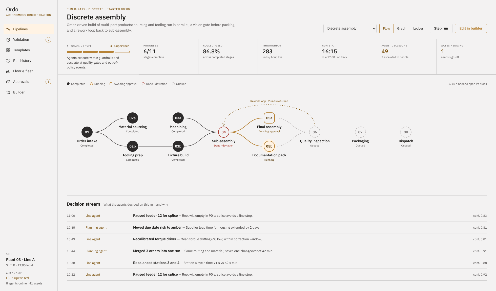
The header shows the run, template selector, view switch (Flow, Graph, Ledger), Step run and Edit in builder. Step run advances the run one column; it stops at a gate that is awaiting approval or held and opens that gate instead. Approving a gate completes its stage. Below it, the autonomy control and six run metrics: progress, rolled yield, live throughput, run ETA, agent decisions and pending gates. The decision stream at the bottom lists the latest agent decisions with reason and confidence.
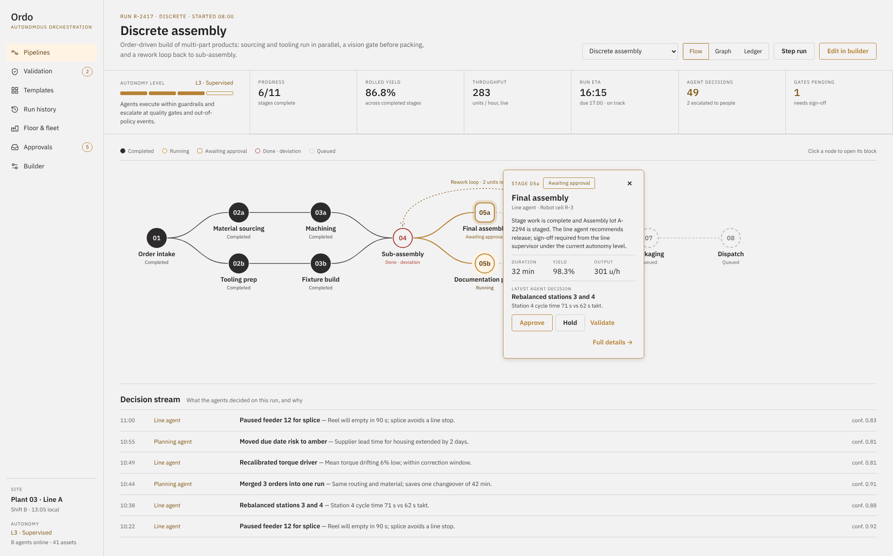
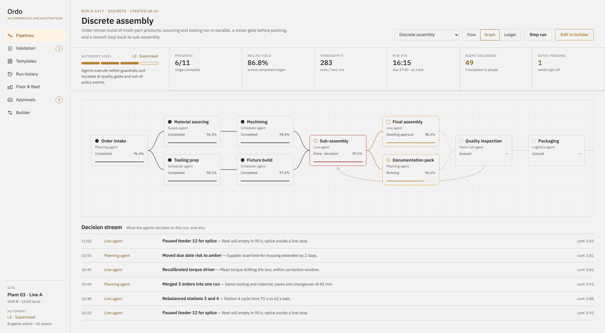
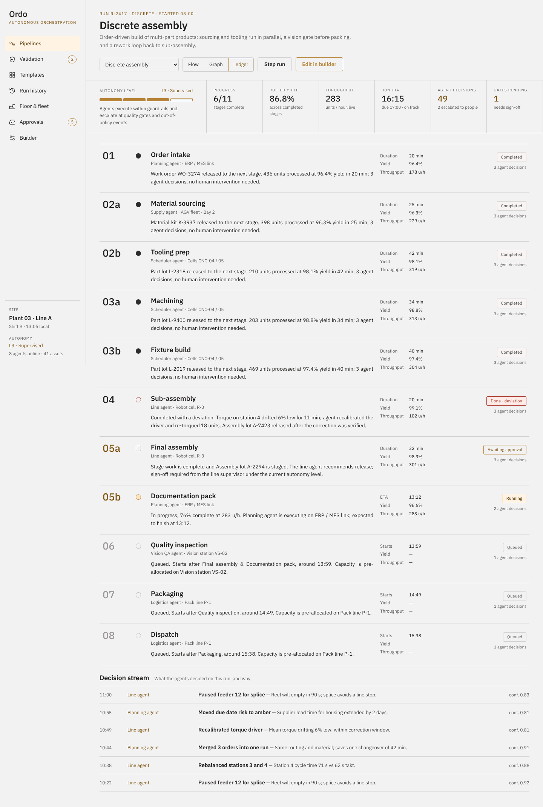
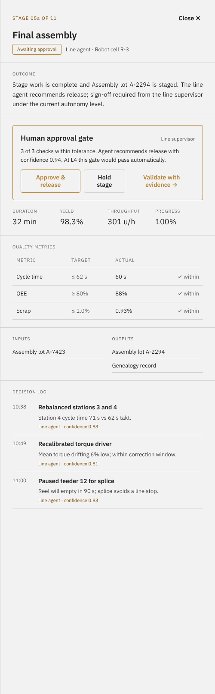
Full details on a node block opens the side panel, which holds everything known about the stage:
The left list shows all validation packages with status, what each is waiting on, and progress through the six steps. Filters: All, Needs me, In review, Closed. New from current pipeline creates a package from the active gate or running stage.
The workspace has a step tracker (Draft → Agent pre-check → Submitted → QE review → Approval → Released), a readiness bar for the owner, and five numbered sections: Scope & acceptance, Validation checks, Proof & evidence, Sign-off, and Audit trail. Acting as switches the signed-in role for demonstration.
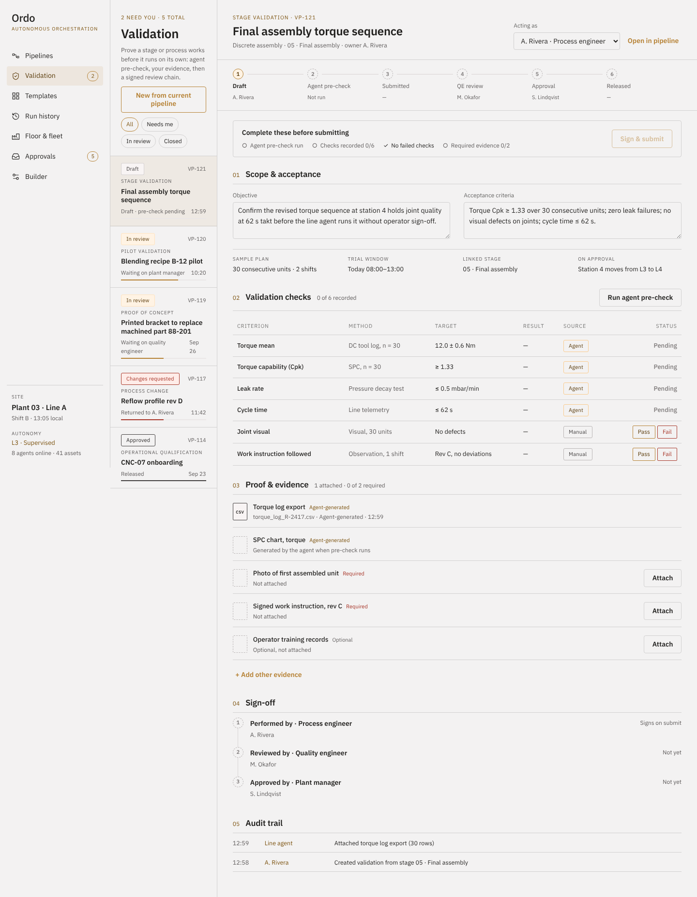
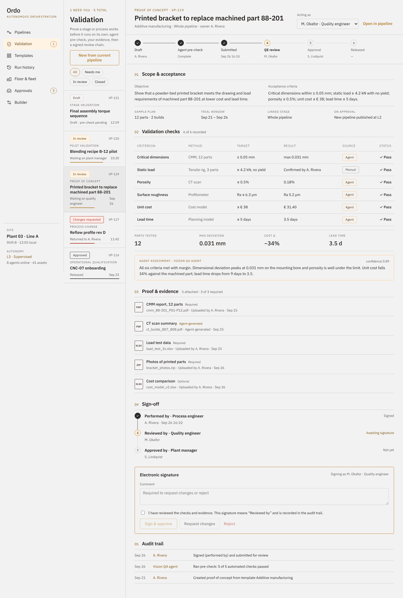
The library of 15 pipeline templates, filterable by category. Each card lists its stage chain (parallel stages joined with “+”), stage and gate counts, and offers Run pipeline or Customize (opens the builder). Appendix A lists all templates.
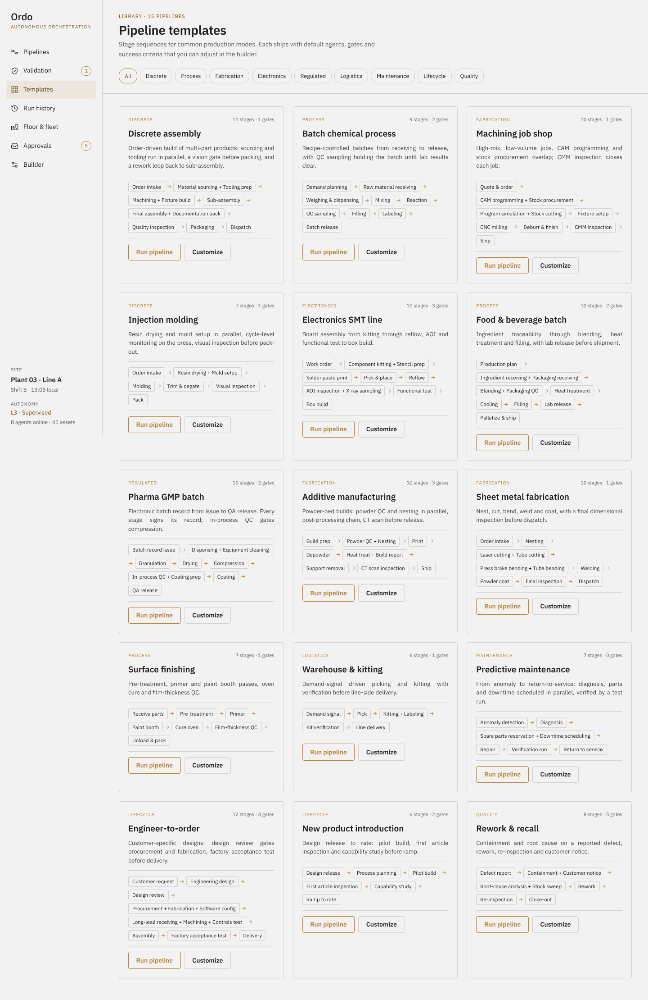
Runs from the last seven days with start, duration, a per-stage outcome strip, yield, agent decisions, human interventions and outcome. Filter by outcome; click a row to open its pipeline.
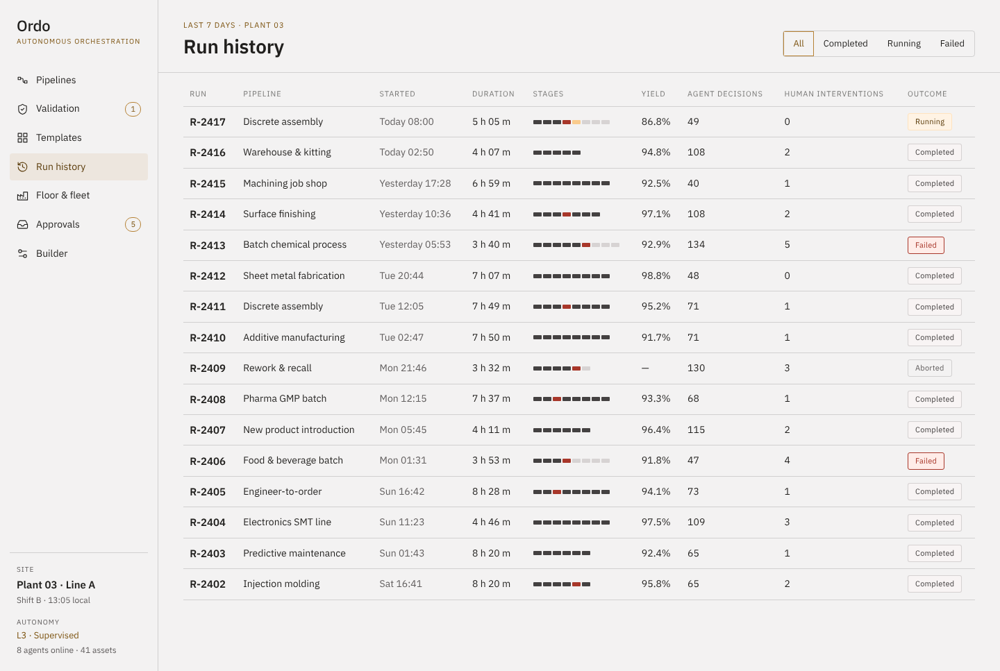
Assets groups every machine, robot, vehicle and station by zone with status, current job, utilization, OEE and owning agent. Agents shows each agent's scope, autonomy level, current task, decisions today, escalations and average confidence.
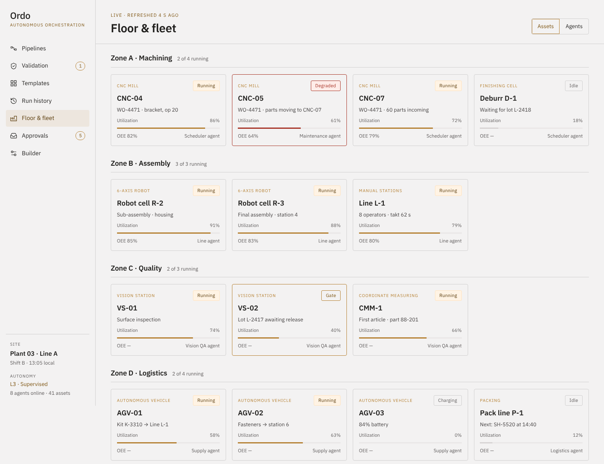
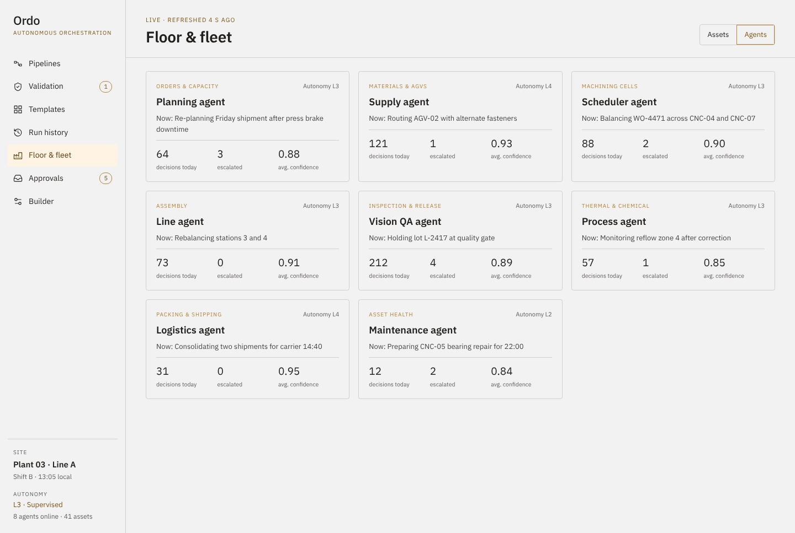
The operational inbox for quick decisions raised by agents during a run: quality gates, supplier substitutions, capacity calls and equipment exceptions. Each item shows the agent's evidence, the options it considered with the recommended one marked, and its confidence. Approve selected option, Reject & hold, or open the stage in its pipeline. Decisions that need formal proof go to Validation instead.
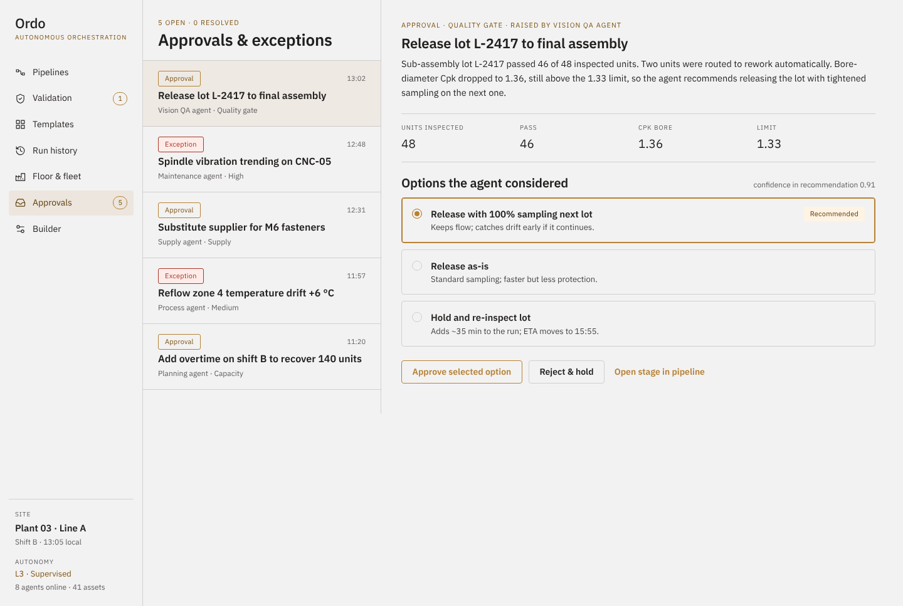
Edit a template's stages: add from the palette, reorder, remove. For the selected stage set the name, assigned resource, execution mode (Auto, Approve, Manual), success criteria, timeout and escalation role. Publish pipeline creates a new template version.
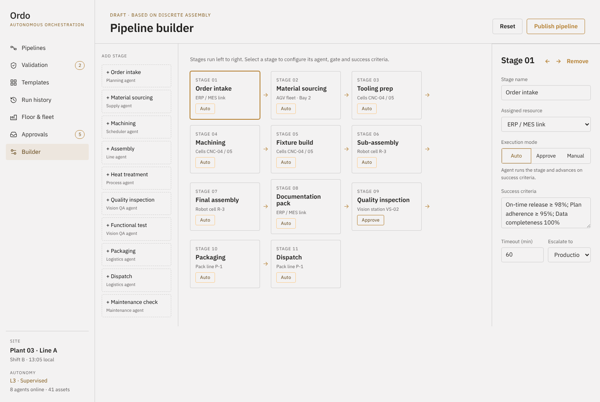
Ordo is organised in five layers. Shop-floor equipment (L1) connects through an on-premise edge gateway (L2) to a cloud data platform (L3). The orchestration core (L4) reads plant state, runs agents and pipelines, and writes decisions and signatures back to the data platform. The experience layer (L5) serves the console, notifications and public API. Enterprise systems connect at L3/L4 through versioned connectors.
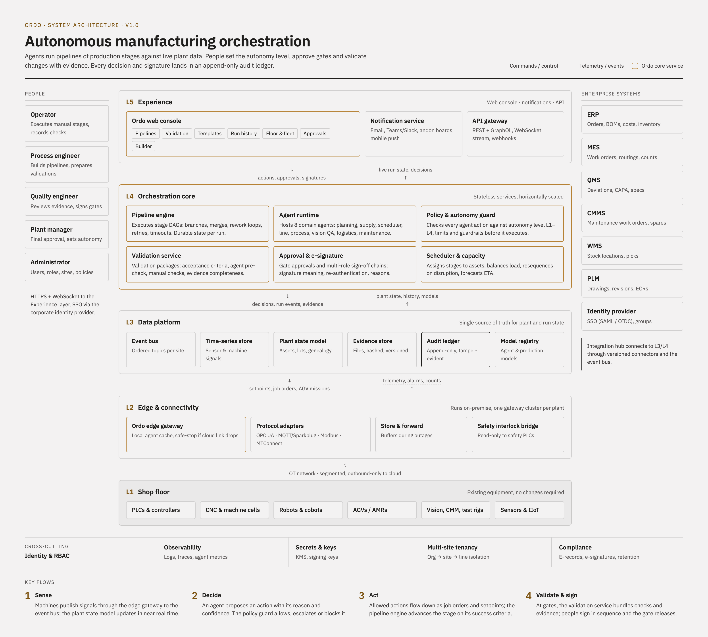
| Layer | Service | Responsibility |
|---|---|---|
| L5 | Web console | All screens in section 3; live updates over WebSocket |
| L5 | Notification service | Email, chat, andon boards, mobile push for gates, escalations, sign-off requests |
| L5 | API gateway | REST and GraphQL, event stream, webhooks; auth and rate limits |
| L4 | Pipeline engine | Executes stage DAGs with branches, merges, loops, retries and timeouts; durable run state |
| L4 | Agent runtime | Hosts the eight domain agents; supplies them plant state and models |
| L4 | Policy & autonomy guard | Allows, escalates or blocks every proposed action by autonomy level and guardrails |
| L4 | Validation service | Packages, pre-checks, evidence completeness, readiness rules |
| L4 | Approval & e-signature | Gate releases and ordered signature chains with meaning, re-authentication and reason |
| L4 | Scheduler & capacity | Assigns stages to assets, balances load, forecasts ETA |
| L3 | Event bus | Ordered per-site topics for telemetry, run events and decisions |
| L3 | Time-series store | High-rate machine and sensor signals |
| L3 | Plant state model | Assets, lots, genealogy, current run state |
| L3 | Evidence store | Uploaded and generated files; content-hashed and versioned |
| L3 | Audit ledger | Append-only, hash-chained record of decisions, signatures and changes |
| L3 | Model registry | Versioned agent and prediction models with evaluation results |
| L2 | Edge gateway | Protocol adapters, store-and-forward, local safe-stop if cloud link drops |
| Entity | Key fields | Relationships |
|---|---|---|
| Site / Line | id, name, timezone, autonomy level | has many Assets, Runs |
| Pipeline template | id, name, category, version, status | has many Stage definitions |
| Stage definition | name, column, lane, agent, resource, mode, criteria, timeout, escalation role | belongs to Template; edges to next stages; optional loop target |
| Run | id, template version, order ref, started, ETA, status | has many Stage runs |
| Stage run | state, progress, yield, throughput, start, end | has Decisions, Alerts, Metrics, Inputs, Outputs |
| Decision | time, agent, action, reason, confidence, policy result | belongs to Stage run; ledger entry |
| Asset | id, type, zone, status, utilization, OEE | assigned to Stage runs |
| Agent | id, scope, autonomy level, model version | makes Decisions |
| Gate | stage run, required role, status | optionally released by a Validation package |
| Validation package | id, type, title, owner, status, objective, acceptance, sample plan, window, outcome on approval | has Checks, Evidence, Signatures, Audit entries; links to Template, Stage, Gate |
| Check | criterion, method, target, result, source (agent/manual), status | belongs to Validation package |
| Evidence | name, required/optional/agent-generated, file ref, hash, uploader, time | belongs to Validation package; file in Evidence store |
| Signature | role, meaning, signer, time, comment, auth method | ordered chain on Validation package |
| Audit entry | time, actor, action, payload hash, previous hash | append-only, chained |
| Type | Used to prove | Typical outcome on approval |
|---|---|---|
| Stage validation | A stage on a specific run meets its criteria | Gate released; stage may move up an autonomy level |
| Process change | A changed parameter, recipe or profile is safe | Change becomes the line default |
| Pilot validation | A new recipe or method works across pilot batches | Added to approved list |
| Proof of concept | A new pipeline or part replacement is viable | New pipeline published at L2 |
| Operational qualification | A new or repaired asset performs like existing ones | Asset joins the agent pool |
Every agent action follows the same path, so it can be explained and replayed.
| System | Direction | Data |
|---|---|---|
| ERP | In / out | Orders, BOMs, inventory, costs; confirmations back |
| MES | In / out | Work orders, routings, counts, genealogy |
| QMS | Out | Deviations, CAPA triggers, approved validation records |
| CMMS | In / out | Maintenance work orders, spares |
| WMS | In / out | Stock locations, picks, kit status |
| PLM | In | Drawings, revisions, engineering change requests |
| Identity provider | In | SSO (SAML / OIDC), groups mapped to roles |
| Shop floor | In / out | OPC UA, MQTT / Sparkplug B, Modbus TCP, MTConnect |
GET /v1/runs/{runId} run, stages, live metrics
POST /v1/runs start a run from a template version
POST /v1/runs/{runId}/stages/{id}/approve release a gate
POST /v1/runs/{runId}/stages/{id}/hold hold a gate
GET /v1/templates list templates
POST /v1/templates/{id}/versions publish a builder draft
POST /v1/validations create a package
POST /v1/validations/{id}/precheck run agent pre-check
POST /v1/validations/{id}/evidence attach a file (multipart)
POST /v1/validations/{id}/signatures sign / request changes / reject
GET /v1/audit?entity={type}:{id} audit entries
run.started, stage.state_changed, agent.decision, gate.awaiting, alert.raised, validation.submitted, validation.signed, validation.released. Delivered on the event stream and as webhooks.
| Component | Where it runs | Notes |
|---|---|---|
| L3–L5 services | Cloud (single-tenant) or customer data center | Containerised; horizontally scaled |
| Edge gateway | On-premise, per plant | Two-node cluster; store-and-forward buffer |
| Agent models | Cloud, with cached copies at the edge | Versioned in the model registry |
| Console | Browser | Desktop-first; tablet for floor use |
| Template | Category | Stages (parallel joined with +) |
|---|---|---|
| Discrete assembly | Discrete | Order intake → Material sourcing + Tooling prep → Machining + Fixture build → Sub-assembly → Final assembly + Documentation pack → Quality inspection → Packaging → Dispatch |
| Batch chemical process | Process | Demand planning → Raw material receiving → Weighing & dispensing → Mixing → Reaction → QC sampling → Filling → Labeling → Batch release |
| Machining job shop | Fabrication | Quote & order → CAM programming + Stock procurement → Program simulation + Stock cutting → Fixture setup → CNC milling → Deburr & finish → CMM inspection → Ship |
| Injection molding | Discrete | Order intake → Resin drying + Mold setup → Molding → Trim & degate → Visual inspection → Pack |
| Electronics SMT line | Electronics | Work order → Component kitting + Stencil prep → Solder paste print → Pick & place → Reflow → AOI inspection + X-ray sampling → Functional test → Box build |
| Food & beverage batch | Process | Production plan → Ingredient receiving + Packaging receiving → Blending + Packaging QC → Heat treatment → Cooling → Filling → Lab release → Palletize & ship |
| Pharma GMP batch | Regulated | Batch record issue → Dispensing + Equipment cleaning → Granulation → Drying → Compression → In-process QC + Coating prep → Coating → QA release |
| Additive manufacturing | Fabrication | Build prep → Powder QC + Nesting → Print → Depowder → Heat treat + Build report → Support removal → CT scan inspection → Ship |
| Sheet metal fabrication | Fabrication | Order intake → Nesting → Laser cutting + Tube cutting → Press brake bending + Tube bending → Welding → Powder coat → Final inspection → Dispatch |
| Surface finishing | Process | Receive parts → Pre-treatment → Primer → Paint booth → Cure oven → Film-thickness QC → Unload & pack |
| Warehouse & kitting | Logistics | Demand signal → Pick → Kitting + Labeling → Kit verification → Line delivery |
| Predictive maintenance | Maintenance | Anomaly detection → Diagnosis → Spare parts reservation + Downtime scheduling → Repair → Verification run → Return to service |
| Engineer-to-order | Lifecycle | Customer request → Engineering design → Design review → Procurement + Fabrication + Software config → Long-lead receiving + Machining + Controls test → Assembly → Factory acceptance test → Delivery |
| New product introduction | Lifecycle | Design release → Process planning → Pilot build → First article inspection → Capability study → Ramp to rate |
| Rework & recall | Quality | Defect report → Containment + Customer notice → Root-cause analysis + Stock sweep → Rework → Re-inspection → Close-out |
| AOI | Automated optical inspection |
| CMM | Coordinate measuring machine |
| Cpk | Process capability index; ≥ 1.33 is a common minimum |
| Gate | A stop point in a run that needs a human release |
| Genealogy | The record of which input lots produced which output lots |
| OEE | Overall equipment effectiveness: availability × performance × quality |
| Rolled yield | Product of the yields of all completed stages |
| Takt | Available time divided by demand; the required pace per unit |
| Validation package | Formal record of scope, checks, evidence and signatures proving a stage or change works |